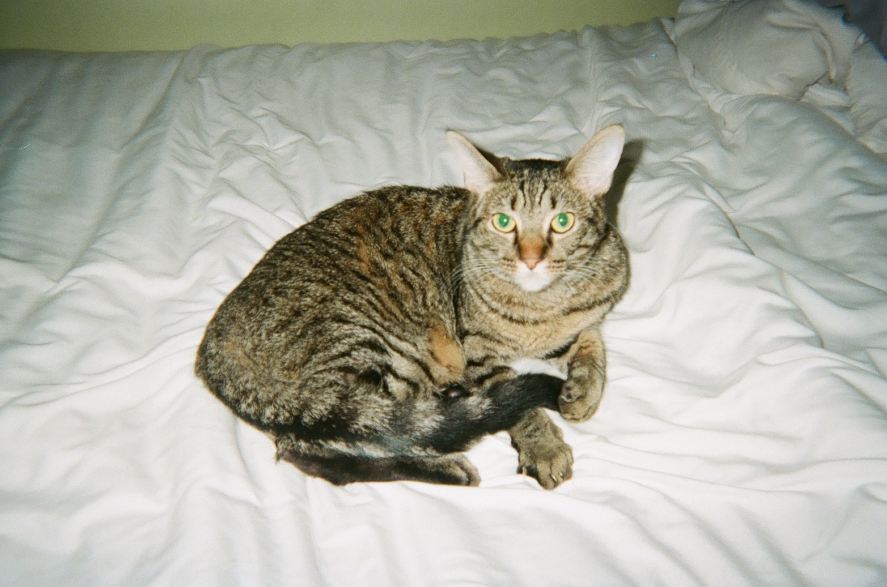

THIS IS A PERSONAL WEBSITE FOR JACK MORRISSEY
LAST LISTENED: TELEVISION PERSONALITIES
THIS IS A PERSONAL WEBSITE FOR JACK MORRISSEY
LAST READ: ALL GATES OPEN: THE STORY OF CAN
THIS IS A PERSONAL WEBSITE FOR JACK MORRISSEY
LAST WATCHED: SENTIMENTAL VALUE
THIS IS A PERSONAL WEBSITE FOR JACK MORRISSEY
jack
Welcome
This is the website of Jack Morrissey, MLIS Student, musician, and aspiring media archivist.
This website was created for the class IS 270: Systems and Infrastructures, for the group of myself, Sophie Mearns, Ivan Mairesse, and Sam Warford. Check out the other tabs to see some of my past work and music.
